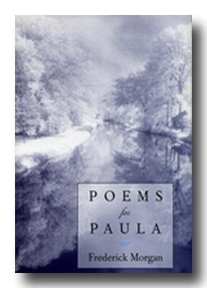

Poems for Paula, 1995
Story Line Press
74 pages; ISBN:1-885266-14-6
Story Line Press
74 pages; ISBN:1-885266-14-6
Available for purchase from Story Line Press.
Click here to read selections from this book.
"Poems For Paula is Frederick Morgan's best and simplest work. The integrity and originality of thought and feeling are evident in the force of language and imagination all the way through." —Hayden Carruth
"In Poems for Paula, Frederick Morgan's meditation broods over the brevity of life and the endurance of love . . . The book has great resonance and power." —Emily Grosholz
"The poetry of Frederick Morgan speaks of 'life freely ventured . . . and durably maintained.' It is filled with light and music—a celebration of love and the world." —Louis Simpson